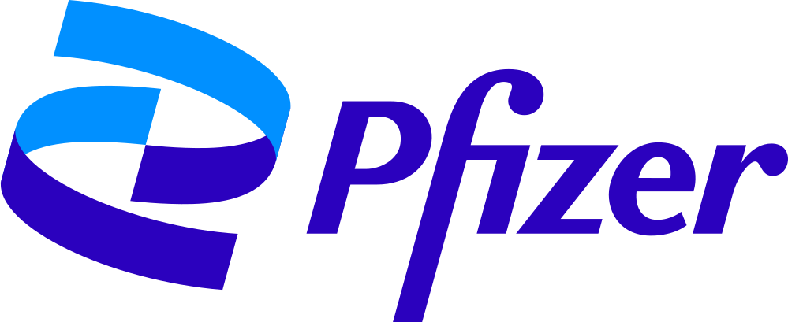
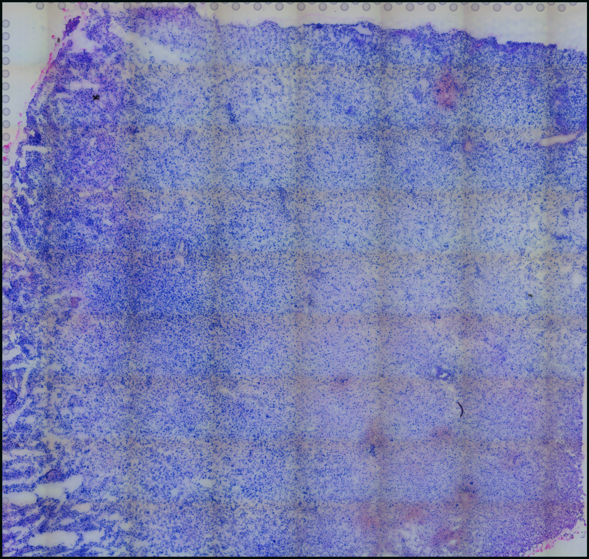
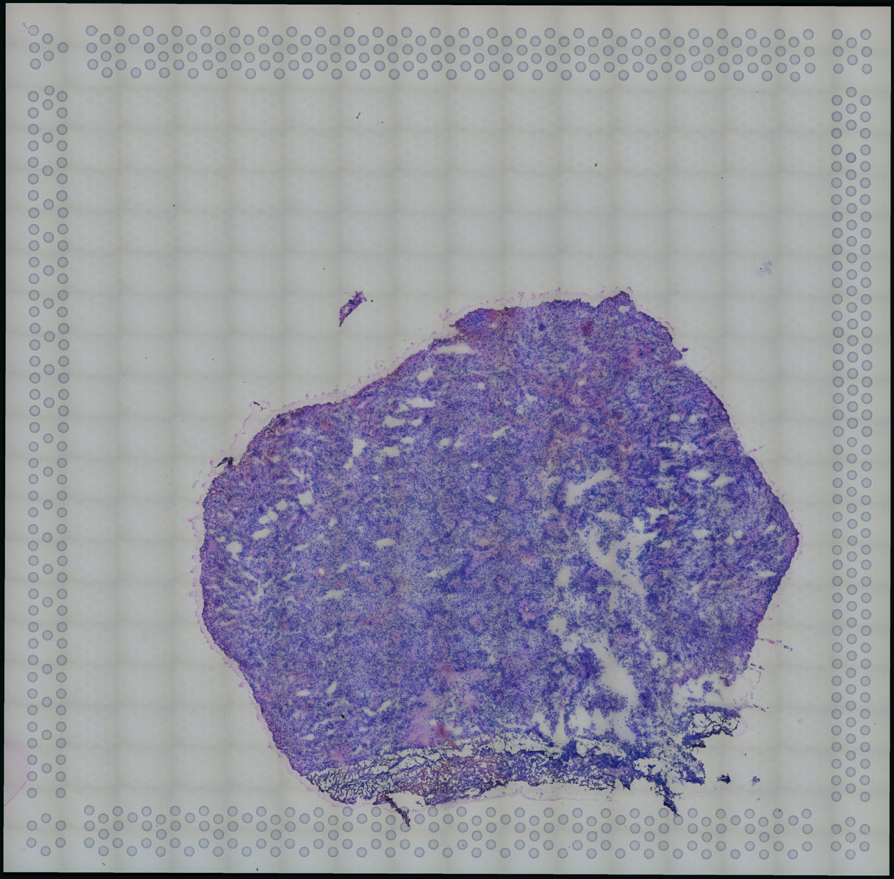
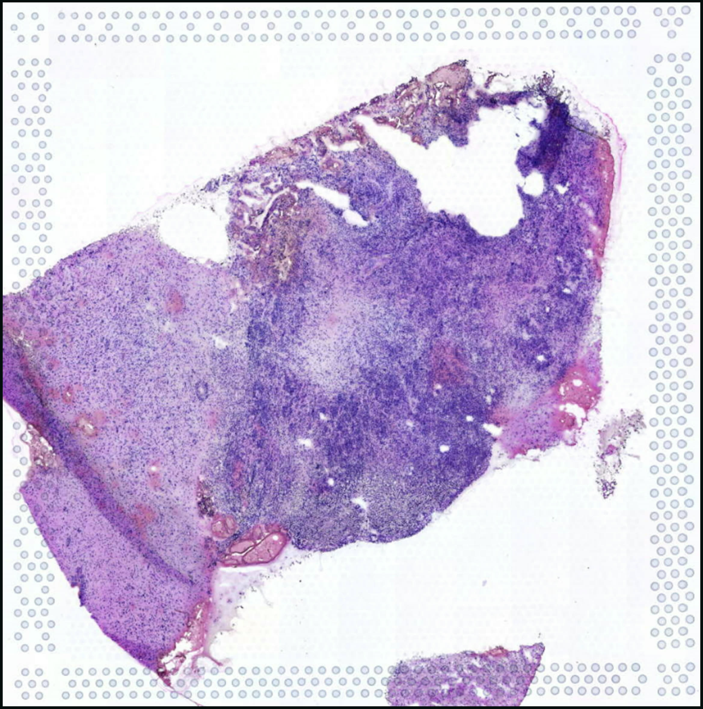
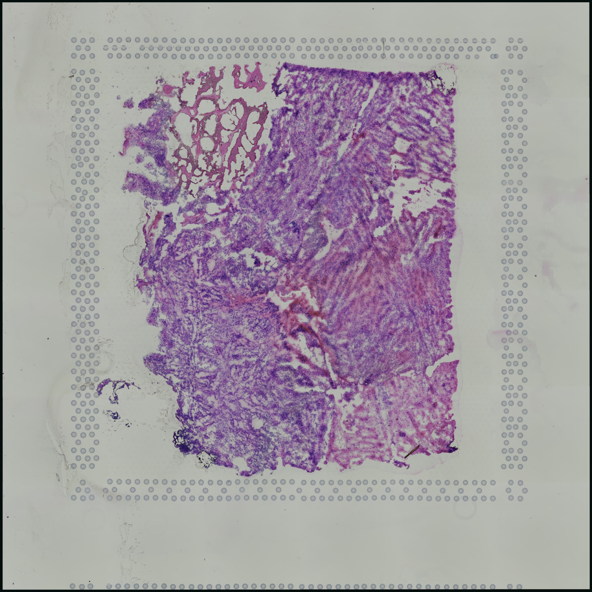
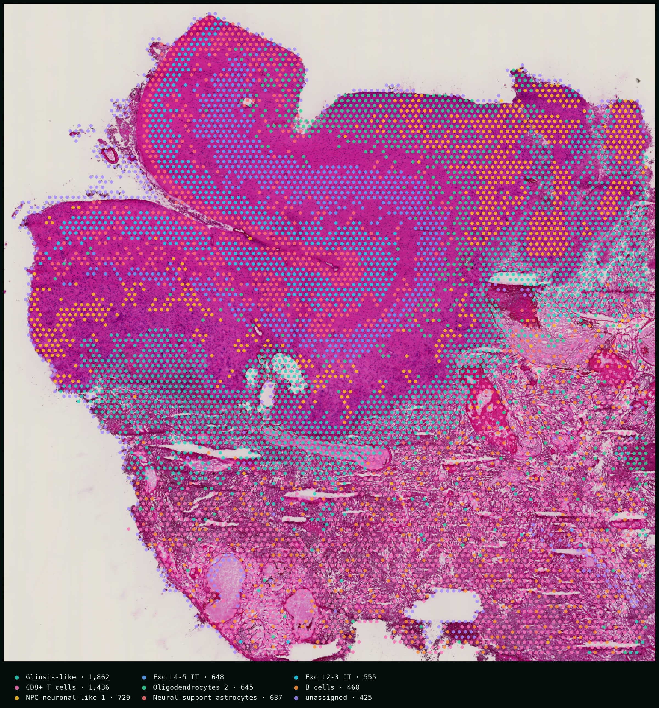
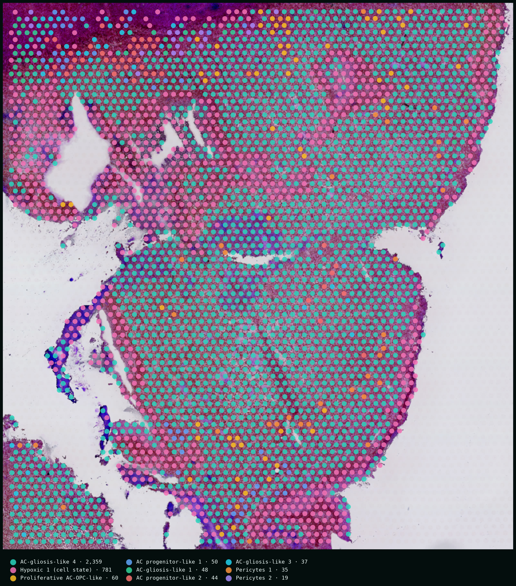
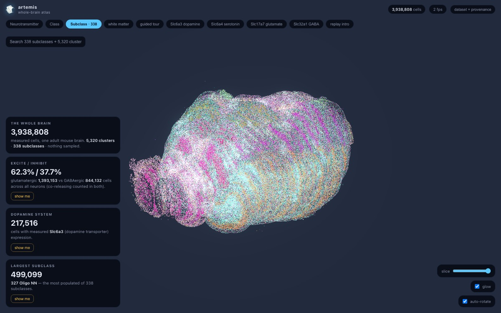
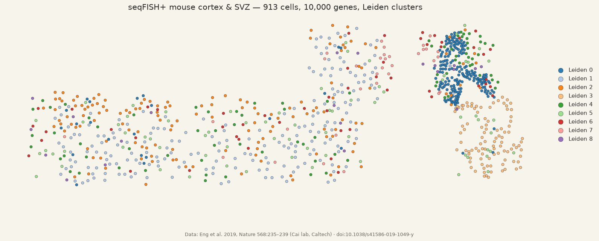

computational biology, accelerated.
Every core your biotech would build or rent.
One AI-powered team.
The first analysis is on us.
Where our team has trained and collaborated




01 · BANKSY — A GBM USE CASE
Clustering that sees the tissue.
A big claim deserves a concrete opening: one method, one tumor section, watched doing its job.
A glioblastoma section. GFAP lights up reactive astrocytes and astrocyte-like tumor states alike — spot-by-spot clustering reads them as one blur.
BANKSY embeds every spot with its neighborhood — its own expression, the average of the ring of spots around it, and how that average changes around the ring. Place becomes part of identity.
Now they separate: putative astrocytes apart from NPC- and MES-like tumor states, each domain annotated by its own parallel subagent. Real GBM1 section, 4,764 spots; labels model-annotated.
02 · FROM SEARCH TO PORTAL
One query, eight sections, one portal.
The section above is one of eight — here is the paper trail that found them, screened them, and shipped them live.
0 series identified · GEO DataSets · accessed 2026-11-13
records identified
0 GEO series
+ 2 sources outside GEO (10x Genomics · gbmspace.org)
screened for
included in this page's GBM demos
3 sources · 0 sections on this page
- · GSE194329 — 4 sections (Ren et al. 2023)
- · 10x Parent Visium — 1 section
- · gbmspace.org atlas — 3 sections (de Jong et al. 2026)
not ingested
0 GEO series
- · no per-sample spatial files
- · non-target platform
- · not yet ingested
- not individually adjudicated







8 H&E sections · 3 sources · one coordinate frame
Fig. 1 | From search to portal — the GEO DataSets query (glioblastoma) AND (spatial transcriptomics) AND "Homo sapiens"[organism] AND gse[entry type] returned 62 human series (accessed 2026-11-13). The funnel shows our working subset, not a published systematic review: the sections this page actually processes — GSE194329 (Ren et al., Nat Commun 2023; 4 sections), the 10x Genomics Parent Visium GBM demonstration dataset (1 section), and the gbmspace.org atlas (de Jong et al., Nature 2026; 3 sections) — the remaining 61 GEO series were not individually adjudicated.
03 · GLIOBLASTOMA, LIVE
Five sections, one afternoon.
Five public glioma Visium sections — four adult high-grade gliomas from the Ren et al. 2023 cohort (GSE194329; two IDH-wildtype GBM, two IDH-mutant grade-4 astrocytomas under WHO CNS5), one glioblastoma from 10x Genomics — dropped into the pipeline unmodified. BANKSY domains, putative cell states, and marker maps, each with its own interactive Vitessce portal. The other three of the eight — the gbmspace.org atlas sections — arrive through the same stack with the paper's own annotations intact; one of them is breathing just below.

HGG1 · Ren et al. 2023
GSE194329 · Visium · astrocytoma, IDH-mut, gr. 4
GBM2 · Ren et al. 2023
GSE194329 · Visium · GBM, IDH-wt, recurrent
GBM3 · Ren et al. 2023
GSE194329 · Visium · GBM, IDH-wt, primary
HGG4 · Ren et al. 2023
GSE194329 · Visium · astrocytoma, IDH-mut, gr. 4
GBM · 10x Genomics
Parent Visium · fresh frozen
Fig. 3 | Artemis Explore, running live in this page — AT15 glioblastoma section (de Jong et al., Nature 2026): pan and zoom the H&E, composite eight expression-derived marker channels, toggle 66 mapped cell states, and let the agent annotate from the run itself. Split view with the s key; open full screen above. Sample cards open the Ren et al. 2023 / 10x sections at full resolution; their state labels are model-annotated and not independently validated.
All of this is one assay on one disease — the demo we lead with, not the edge of the map.
04 · WHAT WE DO
Every core your biotech would build or rent.
One AI-powered team.
That was the promise at the top of the page — and you have now watched one core run end-to-end. The rest work the same way: real pipeline, live portal, a report you can hand a reviewer.
Single-cell
Raw reads to annotated atlases · iPSC benchmarking
demo on request
CUT&Tag and chromatin
Peaks, tracks, differential binding
demo on request
Long-read sequencing
Isoforms, SVs and methylation
demo on request
Radiomics and imaging
Segmentation to outcome models
demo on request
Calcium imaging
Wave detection without hand scoring
demo on request
Clinical data and biostatistics
Cohorts, trials, survival models
demo on request
Custom apps: DNA Studio
Plasmid maps from SnapGene files
demo on request
Also bulk RNA-seq, variants, proteomics, metabolomics, cytometry and microbiome.
05 · GENOMICS, LIVE
Not just spatial.
CUT&RUN, long reads, bulk — the same embedded team takes your assay from fastq to a browser you can hand a collaborator. The panel below is not a screenshot: it is a live igv.js genome browser streaming two public datasets into this page, opened on SOX2 — the stemness factor this site keeps meeting in tumor tissue — caught sitting on its own gene.
streaming reference + tracks from igv.org · GEO · GIAB…
Fig. 4 | Live genome browser (igv.js, hg38) at the SOX2 locus, chr3:181,695,000–181,730,000. Top track: SOX2 CUT&RUN coverage in NCI-H520 lung squamous carcinoma cells — GEO accession GSM8782600 (series GSE289046), RPKM-normalized; the ~800-RPKM peak over the gene body is the factor binding its own locus. Bottom track: PacBio HiFi Revio long-read alignments at 48× from the GIAB HG002 reference sample (NIST ftp-trace mirror, GRCh38) — single reads span tens of kilobases. Both are public datasets streamed live into the browser by HTTP range request; drag to pan, scroll to zoom.
06 · RADIOMICS & IMAGING
From scanner to statistics, browsable.
A longitudinal diffusion-MRI cohort browser we built for a preclinical Parkinson's study: per-subject FA and fiber-orientation maps, full 3D volumes in the browser, and regional group statistics over 300 atlas regions — one interface from raw scans to effect sizes.
Fig. 5 | The DTI cohort browser — 15 mice × 3 timepoints, registered to the Allen CCFv3 atlas (100 µm): FA mosaics, DEC fiber-orientation maps, in-browser 3D volumes, and per-region trajectories with effect sizes. Preclinical research in progress; regional labels provisional.
07 · FIGURES, INTERROGATED
One UMAP is a choice, not a fact.
This page has shown you a lot of figures by now — a good reviewer asks how much of each one was a choice. Every embedding you have ever been shown was one point in a parameter space — and the picture moves when the parameters move. So instead of curating the prettiest view, we hand you the dials: the same section, the same neighbors graph, four parameterizations. Confirmation bias dies in the comparison.
loading embedding…
Fig. 6 | The same spots, four embeddings computed offline from the same neighbors graph (fixed seed), animated between as you switch — watch clusters merge, split, and drift while their labels never change. GBM3, Ren et al. 2023 (GSE194329); same neighbors graph, four UMAP parameterizations; every view computed, none curated.
08 · H&E × FOUNDATION MODELS
The slide already knows.
So far, everything on this page works on data you paid to generate. The cheapest data you own is still waiting. Every lab has H&E — it costs almost nothing and it's already in the archive; spatial profiling costs thousands per section, so almost nobody has it at scale. Pathology foundation models (UNI, Virchow, CONCH, Prov-GigaPath) are learning to read molecular state straight from morphology — and pairs like the one below are exactly the supervision that teaching requires: profiled tissue, not H&E-derived predictions.

1 · your archive of H&E slides
Every pathology department already has decades of them — stained, scanned, and otherwise silent.
2 · foundation-model embeddings
UNI, Virchow-class encoders turn each tile into a vector that already carries morphology's structure.
embedding space — concept, not real vectors
3 · fine-tuned on your measured spatial pairs
Your cell2location maps become the labels → predicted molecular maps on every archived slide.
capability we build with you — not shown as results
We haven't trained this model — nobody should claim that lightly. What we do is build and fine-tune it per lab: your slides, your measured spatial runs as ground truth, your archive unlocked. And your archive is only the one you own — the world keeps a bigger one.
09 · ARTEMIS BENCHMARKING
“How does my sample compare?”
That one question is most of bioinformatics. The NIH’s archives hold the answer — the world’s data, at the tips of your fingers — if someone mines it next to your run. We drop your dataset in beside the public cohorts that matter: same pipeline, same markers, same plots, your tissue against everyone else’s.
300,683
public studies in NCBI GEO
8,836,174
deposited samples
2,198
spatial-transcriptomics series
NCBI GEO, queried via eutils · accessed 2026-11-13
Every chip above is a public study already live on this page.
10 · YOUR CO-SCIENTIST
Text us like your core.
A dedicated co-scientist rides inside every portal we ship — grounded in your clusters, markers and spatial statistics, answering the way a good core facility does, minus the three-week queue. Run it on a frontier cloud model, or flip the dropdown to a local open-source model through Ollama: no API keys, no cloud, no PHI exposure.

open live →seqFISH+ cortex
open live →Three live portals, one co-scientist. The same rail ships with every assay we support — the live genome browser above is where CUT&RUN and long reads land.
Illustrative exchange — the prose is scripted, every number is real: output/TenX_GBM/report.md; Moran's I computed with the portal's live tool (backend/analysis/live.py) on the same section.
11 · THE STACK
Eight capabilities, one stack.
Everything above — the domains, the labels, the portals, the copilot — came out of these eight pieces. Welcome to the machine room.
Fig. 8 | The pipeline as a live board — five public glioma datasets replayed through the real five-stage run (stage names from run_pipeline.py; counts from the shipped runs). Condensed replay, not a live cluster.
12 · THE STACK, CONNECTED
Speaks the tools you already trust.
Not a list — a working graph: the languages, databases, and viewers behind every demo on this page, wired the way we actually use them.
The stack
This is the stack that built every demo above. Hover any node — the card tells you what we run it for.
HOW AN ENGAGEMENT WORKS
1 · pilot
The first analysis is on us — a public or in-house dataset, turned into a live portal.
2 · scope
One call. We map your assays and questions to a concrete deliverable list.
3 · deliverables
A live portal, the written report, the figures — and the code that made all three.
4 · your data stays yours
Local-mode runs mean zero egress; cloud models are opt-in per project; deletion on request.
built by Logan Beharry
researcher-founder — who ran every analysis on this page before selling it.
pipelines that ran, not promises
every figure on this page came from an end-to-end run on public data — Visium, MERFISH and seqFISH today; Xenium ingest in the same stack.
GSE194329, re-analyzed end-to-end
everything on this page was generated from public data by the pipeline shown above. Ask for the code.

Your data has a story.
If your lab is sitting on spatial data and short on computational hands, the first analysis is on us — pick a public or in-house dataset and we'll turn it around as a live portal.